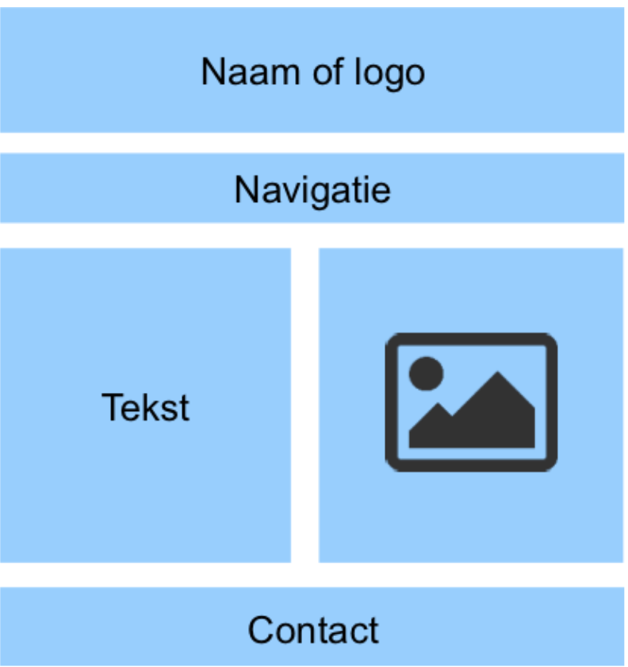

Blokken model
Op deze pagina ga ik het hebben over het blokken model.
Het blokken model is een manier waarop jij je pagina mooi kan indelen.
Als je wilt beginnen met een website, dan begin je in HTML en CSS. Voordat jij je website kan maken,
bedenk je eerst hoe je website eruit komt te zien. Je gaat een ontwerp maken.
Om goed te bedenken hoe jij wilt dat de website eruit zien dan moet je gaan denken in blokken. Dat doe
je om een goede structuur te krijgen, je pagina moet niet een
grote rotzooi worden.
Je moet in blokken gaan denken omdat alle websites uit blokken zijn opgebouwd, als je naar de bovenkant
van een website kijkt dan zie je vaak het logo en een navigatie
balk, die zijn allemaal opgebouwd
uit blokken.
Blokken model maken
Hoe begin je met zo'n model? Dat ga ik nu uitleggen.Als je gaat beginnen met je website gebruik je dus HTML, HTML is ervoor gemaakt om te werken met blokken.
Zoals ik het al eerder over de structuur had, zorgen blokken dus voor de structuur in je pagina.
Je gaat zoals eerder besproken eerst je pagina ontwerpen. Dit kan je op papier of op je computer in bijvoorbeeld word doen.
Je beschrijft per blok wat je erin wilt hebben, welke ze functie ze dus moeten hebben. Al die blokken bij elkaar wordt blokkentructuur genoemd.
De nette naam is structuurelementen in dit gevak noemen we het de blokelementen
Vaak zit boven aan de pagina de naam of het logo, daaronder de navigatie colom, dan wat tekst en een afbeelding en de contact informatie. Hier is foto voor verduidelijking.

Dit is een heel standaard model, zo standaard dat er vaste namen voor zijn gemaakt:
- Header , de header wordt gebruikt voor de titel van de webpagina of het logo;
- Nav Dit is voor de balk onder de header, de navigatie dus waar al je andere verwijzingen van sites naartoe staan;
- Article dit is letterlijk het artiekel, van jouw site dus voor een stuk tekst, je kan hiernaast een afbeelding zetten;
- Footer dit is voor aan de onderkant van je webstite, hier staat dan de contact informatie dus je email address of telefoon nummer.
Het kan zo zijn dat het blok dat jij erin wilt zetten niet een vaste naam heeft.
Als dat zo is kan je, jouw blok zelf een naam geven. Als jij een blok maakt die je zelf een naam geeft dan gebruik je de naam division , je gebruikt dan een
division-element . De code die hierbij hoort is als volgt (dit is met het voorbeeld van een image): < div id="image"> zoals je ziet heb je dus een id aangemaakt.